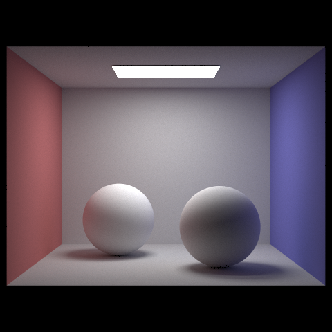

CS 184 Final Project: Anisotropic Scattering in Clouds
Progress Report
Jonathan Sun
Project Overview
This project seeks to augment the pathtracer created for Assignment 3-2 to be able to render realistic clouds from any mesh using an approach in the spirit of the iterative slab-based method of computing anisotropic scattering in clouds as described in the following research literature:
Progress: Basic Slab-Based Radiance and Hypertexture Emulation for Cloud BSDFs
So far, I have implemented the basic scaffolding for simulating scattering in clouds, adding basic placeholder methods to be refined in the next few days. Some changes made to the pathtracer so far include:
Added a CloudBSDF class in bsdf.cpp that currently acts like DiffuseBSDF.
Added the function basic_cloud_slab_radiance to pathtracer.cpp, which is called midway through at_least_one_bounce_radiance and does the following for now:
Ends immediately if ordered to do so by Russian roulette or by current ray depth hitting 0.
From a hit point, projects a ray in the direction of a light source and another ray in the direction of the input ray.
If the lightbound ray does not collide with the same cloud mesh at all, then the local surface is treated like a normal diffuse surface.
Otherwise, a slab (pair of planes) is formed perpendicular to the lightbound ray, with one plane tangent to the point of collision between the cloud mesh and the lightbound ray.
A random location on top of the slab is sampled repeatedly until a location that can be projected up/down the plane onto the cloud mesh is found.
A collector (region with a mean location and variance along a plane) is created at the selected spot on the plane, and the average radiance of rays traced from the collector is computed.
The ray projected in the direction of the input ray measures the local thickness of the cloud. This thickness, along with a delta parameter (which controls the ray traversal distance required for the cloud to appear opaque), is used to control the opacity of the collector radiances.
Added the files slab.cpp and slab.h for storing various helper methods regarding slabs and collectors.
Preliminary Renders
NOTE: All images are rendered using 2048 samples per pixel, 4 samples per light, max ray depth of 300, and Russian roulette termination probability of 0.3
Fig 1.1:sky/CBspheres_cloudy.dae rendered with delta parameter of 0.01.
Fig 1.2:sky/CBbunny_cloudy.dae rendered with delta parameter of 0.01.
Fig 1.3:sky/CBspheres_cloudy.dae rendered with delta parameter of 0.8.
Fig 1.4:sky/CBbunny_cloudy.dae rendered with delta parameter of 0.8.

Fig 1.5:sky/CBspheres_lambertian.dae rendered for reference.
Fig 1.6:sky/CBbunny.dae rendered for reference.
Reflections and Work Plan
While the preliminary results aren't the most cloud-like, I am glad to see that my preliminary attempts of demonstrating light transport and hypertexture emulation are working, as seen by the glazed-glass appearances and faded edges of the above cloud renders. Having made it over most of the daunting foundational steps (adding new classes, figuring out how to link new files with cmake, etc.), I'm making good progress and should be able to have more refined cloud renders in a week or so.
Over the next week, I plan to implement the following refinements:
Implement a more faithful emulation of the canonical light transport algorithms as described in the above research literature. This involves randomly sampling winding, segmented paths between the hit point in a cloud mesh and the top of the slab, as well as maintaining multiple collectors on top of the slab at once for different scattering orders and iteratively repeating collector projection and light transport until convergence is met. Perhaps, rays generated from such collectors can have their depth reduced by their scattering order number, as scattering order corresponds to the number of bounces made within the cloud.
Improve hypertexture emulation to be able to render procedurally varied surfaces that are sharp, unlike the blurred edges shown in the preliminary cloud renders above. This may require implementing a sort of volumetric map that allows for sharper, more uneven changes in opacity as local cloud thickness varies.